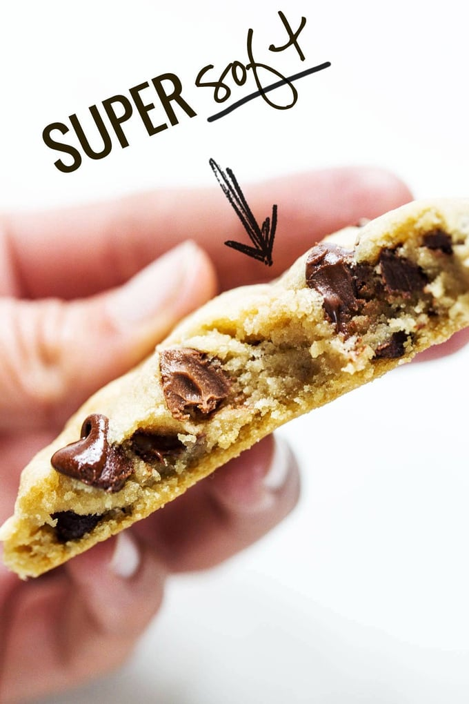
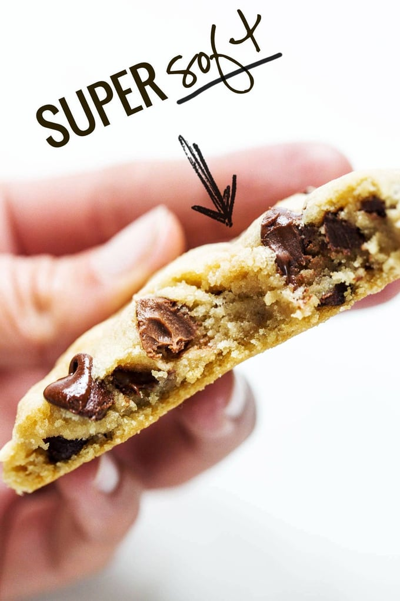

History
Chocolate Chip Cookies were first made in the late 1930s by a woman named Ruth Wakefield. Her recipe first appeared in her cookbook "Tried and True," and was meant to be served with ice cream. Ruth Wakefield is most known for her ownership of the Toll House restaurant in Massachusetts. Her chocolate chip cookie recipe became very popular, and Ruth Wakefield quickly rose to fame.
History of Chocolate Chip Cookies 
